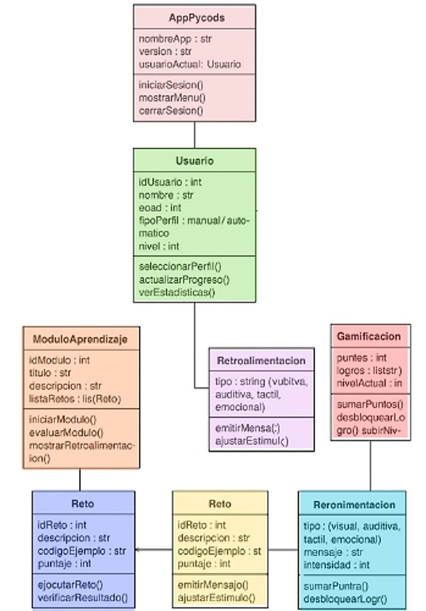
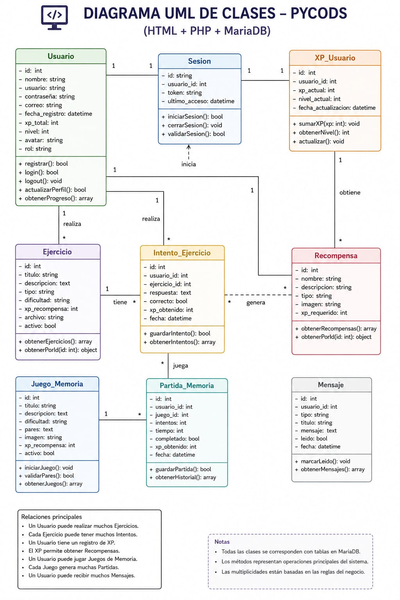
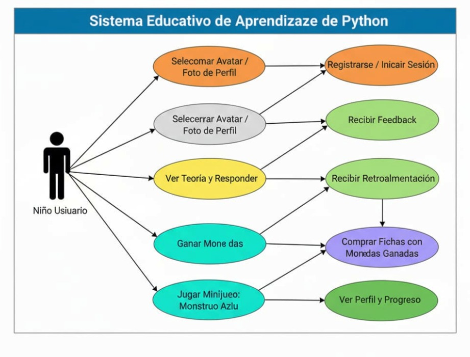
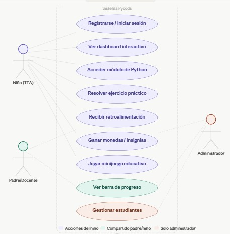
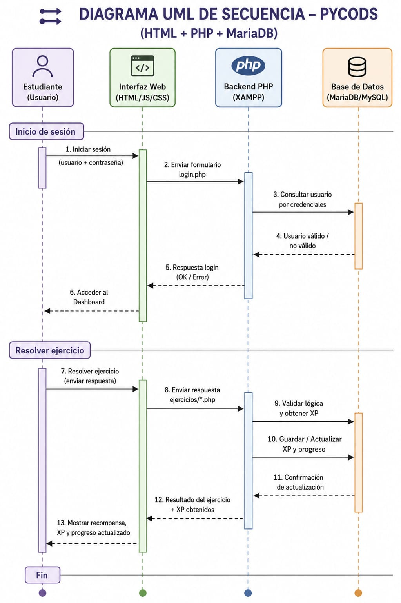
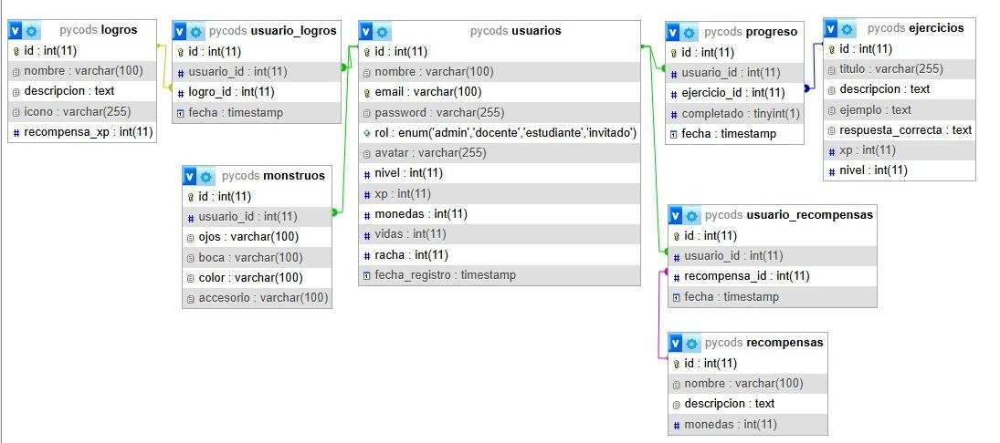

Los siguientes diagramas permiten visualizar la estructura, las funcionalidades y el flujo del sistema Pycods. Se presentan en dos versiones que reflejan la evolución del proyecto a lo largo del desarrollo.
Muestra las clases principales del sistema en su primera versión: AppPycods como clase principal, Usuario con gestión de perfil y progreso, ModuloAprendizaje,Reto, Retroalimentación y Gamificación, con sus atributos y métodos correspondientes.

Versión ampliada con la integración del backend. Incluye clases como Usuario, Sesion, XP_Usuario, Ejercicio, Intento_Ejercicio, Recompensa, Juego_Memoria, Partida_Memoria y Mensaje, reflejando la arquitectura completa del sistema con MySQL/MariaDB.

Muestra las interacciones del Niño Usuario con el sistema: registrarse o iniciar sesión, seleccionar avatar, ver teoría y responder ejercicios, recibir retroalimentación, ganar monedas, comprar fichas y jugar minijuegos como el Monstruo Azul.

Versión ampliada con tres actores: Niño (TEA), Padre/Docente y Administrador. El niño puede registrarse, acceder al dashboard, resolver ejercicios, recibir retroalimentación, ganar insignias y jugar minijuegos. El padre/docente puede ver la barra de progreso y el administrador gestiona estudiantes.

Muestra el flujo de interacción entre los componentes del sistema en dos escenarios clave: el inicio de sesión (validación de credenciales entre la interfaz web, el backend PHP y la base de datos) y la resolución de ejercicios (envío de respuesta, validación de lógica, actualización de XP y progreso, y visualización de recompensas).

Representa la estructura de la base de datos relacional de Pycods. Incluye las tablas: usuarios, progreso, ejercicios, logros, usuario_logros, recompensas, usuario_recompensas y monstruos, con sus respectivas relaciones y tipos de datos.
